Novità di Seven Kingdoms
in corsoA che punto sono · aggiornato 26/10 ore 9:00
Sto facendo: Raccolta finale su GitHub per i giochi: contesto completo per un altro agente di programmazione (Seven Kingdoms, Ver Sacrum, sala giochi Effettokarmagra). Le prove di catena e Casa stregata le fa Simone.
Poi, in quest'ordine:
- Raccolta su GitHub pronta e avviso a Simone.
Diario di oggi:
- 26/10 9:00 — Catena delle merci (lingotti → armi e vasi, 9 prodotti), Casa stregata con i Fryhtan, camminate nuove dei 6 popoli, salvataggio più sicuro nel browser (pubblicato; prove complete da fare in partita).
- 26/10 1:50 — Sei popoli nuovi (18 in tutto), Metropoli rifatta (ricerca all'Università, pulsante nel villaggio, palazzo della città, 100 abitanti), colore del regno sugli edifici nuovi, posa da fermo vera (pubblicato).
- 26/10 0:30 — King's Palace (la metropoli del re, quartieri da 100 posti, un palazzo per civiltà), menu di ricerca dell'Università come la Tower of Science, posa da fermo a gambe unite per Romani e Celti (pubblicato).
- 25/10 23:00 — Economia: pietra, legno e sale; Falegnameria, Saline, Fonderia, Vasellame; boschi fitti; camminate in diagonale corrette (pubblicato).
- 25/10 22:00 — Metropoli come grande villaggio: struttura con la fontana, 200 abitanti, quartieri di casette (pubblicato).
- 24/10 11:10 — Camminate di Romani e Celti con lo scambio di gamba (pubblicato).
- 24/10 9:36 — Farming e Mulino con i contadini; ricerca all'Università (pubblicato).
Già nel gioco
nuovoCatena delle merci: lingotti, armi, vasi
Rifatta come ha chiesto Simone: «la factory dovrebbe produrre il materiale lavorato, tipo in factory i bronze ore diventano ingot, e gli ingot vengono usati dalla foundry». Ora le merci sono 9 e la produzione ha due passi.
- Factory: lavora la materia della miniera collegata. Il rame diventa lingotti di rame, il ferro lingotti di ferro, l'argilla argilla raffinata, la pietra pietra squadrata, il legno assi, il sale sale raffinato.
- Fonderia: prende i lingotti da una Factory o da un mercato collegati e fa le armi: di bronzo dai lingotti di rame, di ferro da quelli di ferro.
- Vasellame: fa i vasi dall'argilla raffinata.
Si vende tutto al mercato e viaggia su carovane e navi. Nelle partite salvate prima, armi e vasi già fatti diventano lingotti o argilla raffinata.

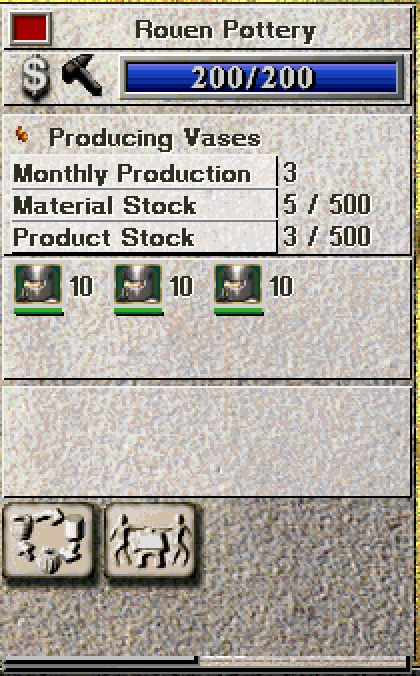

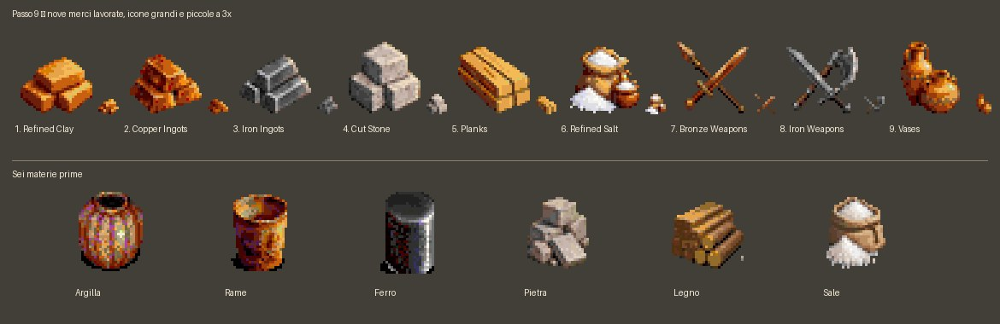
nuovoCasa stregata: i Fryhtan da assoldare
È la mod 5 dell'elenco di Simone: «come la Inn, ma con Fryhtan addestrabili o assoldabili». La Haunted House è nel menu di costruzione, dopo la Inn. Grafica di Codex: un maniero cupo con le finestre verdi e le bandiere del colore del regno.
- Come alla Inn, nell'elenco compaiono fino a 4 Fryhtan delle specie presenti nella partita, con il livello e il prezzo. Il prezzo sale con la forza e con il livello.
- Chi assoldi diventa un Fryhtan del tuo regno: lo comandi come un soldato, non vaga da solo e non attacca se l'aggressività è spenta.
- Addestrabile: migliora combattendo e, se resta fermo vicino alla Casa, si allena da solo.
- Costa il mantenimento e un po' di reputazione: i Fryhtan sono nemici di tutti. Al massimo 6 per Casa.

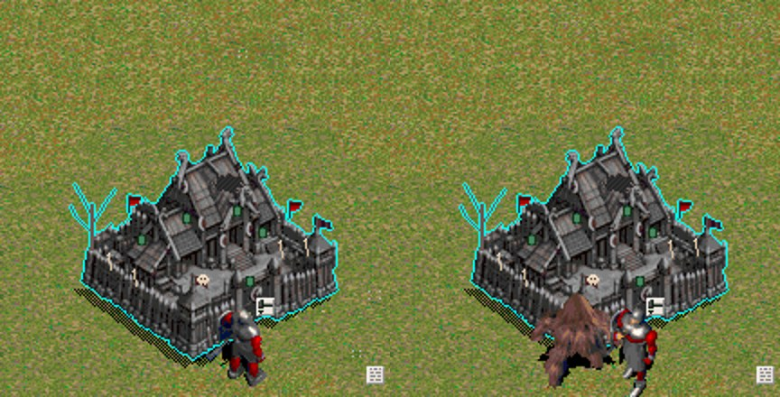

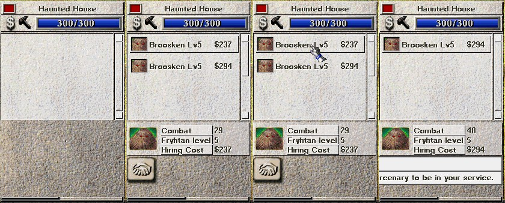

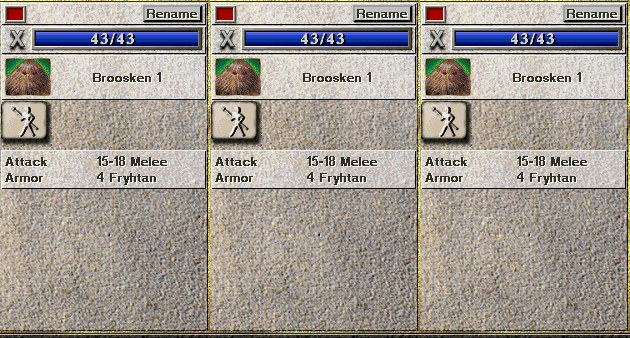

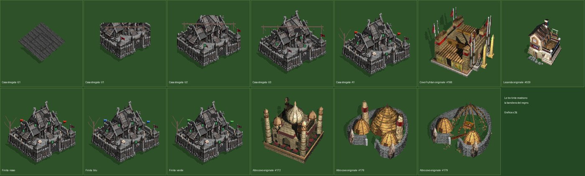
nuovoSei popoli nuovi: Sanniti, Etruschi, Mongoli, Iberi, Babilonesi, Cartaginesi
Ora si gioca con 18 popoli. I sei nuovi hanno la grafica di Codex: case, figure, ritratti di soldato, generale e re, Seat of Power e dio (Mamerte, Tinia, Tengri, Neton, Marduk, Baal Hammon). Hanno anche nomi storici per persone e città: Bovianum e Saepinum per i Sanniti, Tarquinia per gli Etruschi, Karakorum per i Mongoli, Arce per gli Iberi, Babilonia, Cartagine. Compaiono anche come regni del computer e città indipendenti. I nuovi dei, per ora, combattono come il drago normanno.
La schermata di nuova partita mostra i 18 popoli in ordine alfabetico, su 3 righe. I salvataggi vecchi, dalla versione 214 alla 221, si caricano tutti.

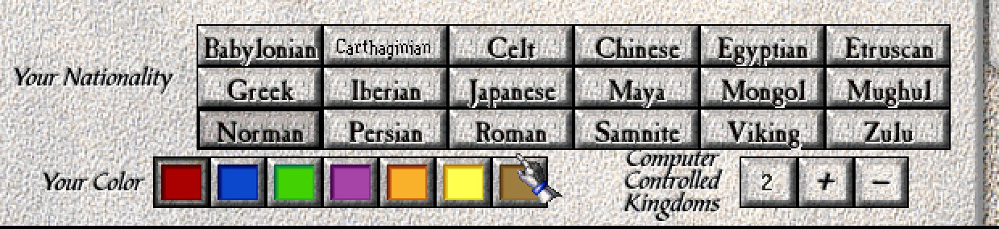

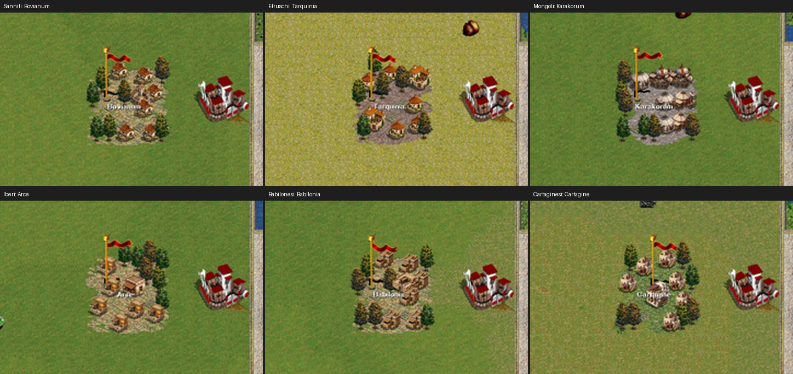

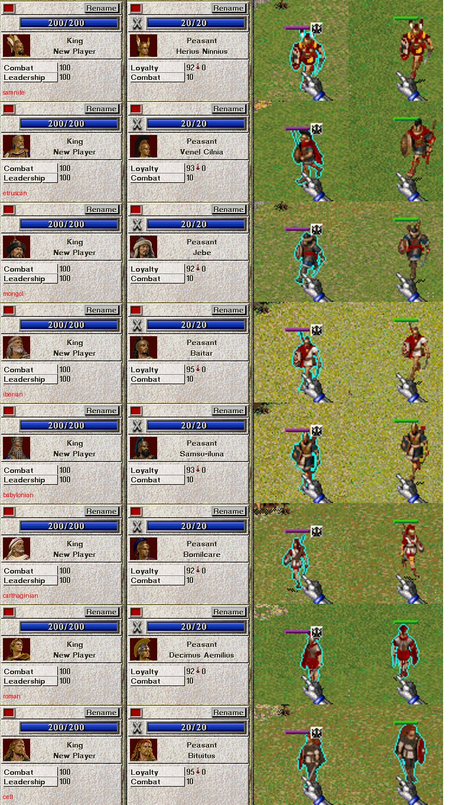
correttoColore del regno sugli edifici nuovi
Segnalato da Simone: gli edifici nuovi non cambiavano colore. Ora Grand Market, Università, Mulino, Falegnameria, Saline, Fonderia e Vasellame hanno tetti, teli e bandiere nel colore del regno che li possiede, come gli edifici originali (lavoro di Codex).

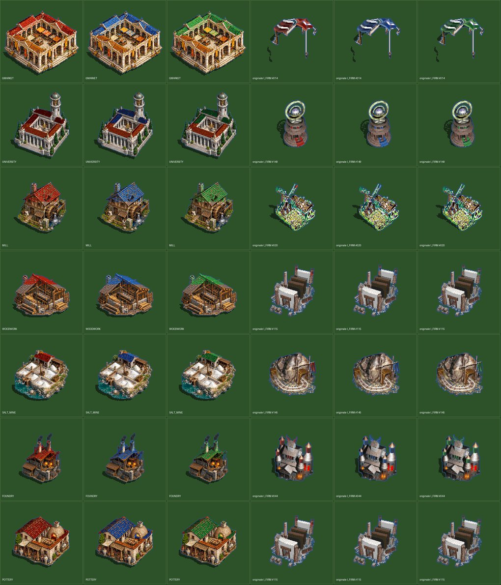
correttoPosa da fermo
Segnalato da Simone: da fermi i popoli nuovi stavano a gambe larghe, perché il gioco usava il primo passo della camminata. Codex ha disegnato una vera posa da fermo, dritti e a gambe unite, per tutti e 8 i popoli nuovi, in tutte le direzioni.

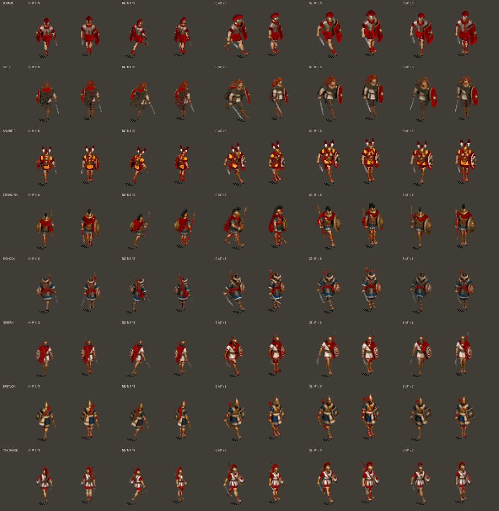
nuovoRomani e Celti
Due popoli nuovi, con la grafica di Codex: case, figure, ritratti, Seat of Power e nomi storici. Si scelgono nella schermata di nuova partita; compaiono anche come regni del computer e città indipendenti. Dei: Jupiter per i Romani, Cernunnos per i Celti (per ora combattono come il drago normanno, i poteri propri sono da decidere).

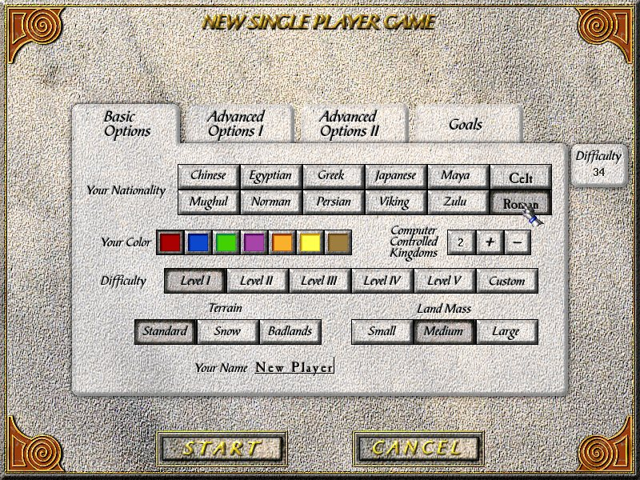

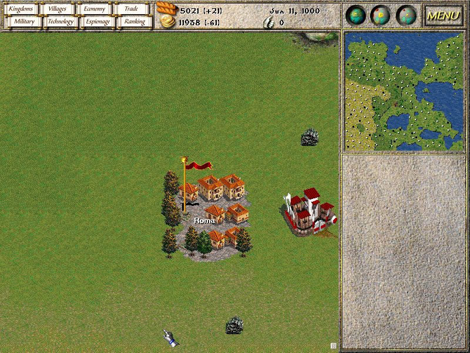

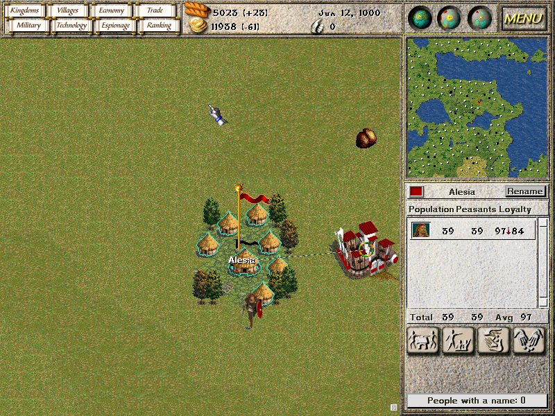

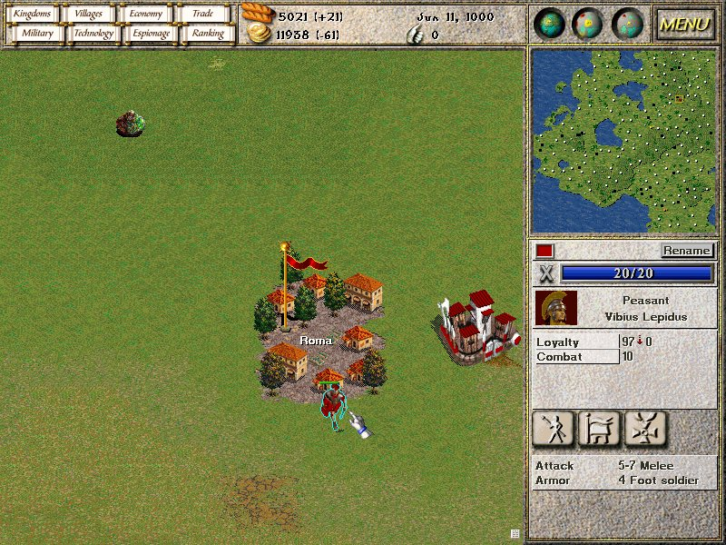

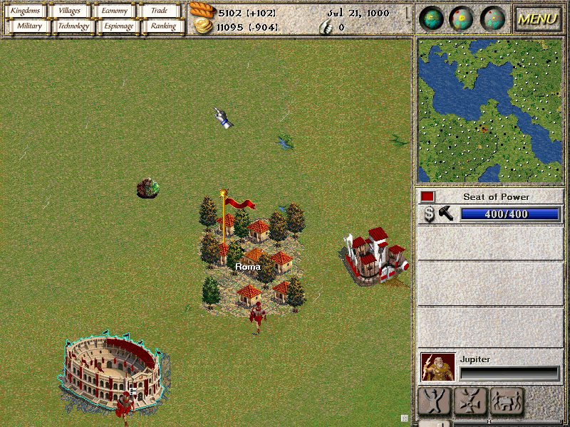
nuovoUniversità e Mulino
Università: funziona come il fortino. Il professore è chi ha la Ricerca più alta, gli altri entrano come studenti e imparano fino al suo livello; chi esce è uno «Scientist». Mulino: i villaggi collegati crescono del 50% più in fretta.

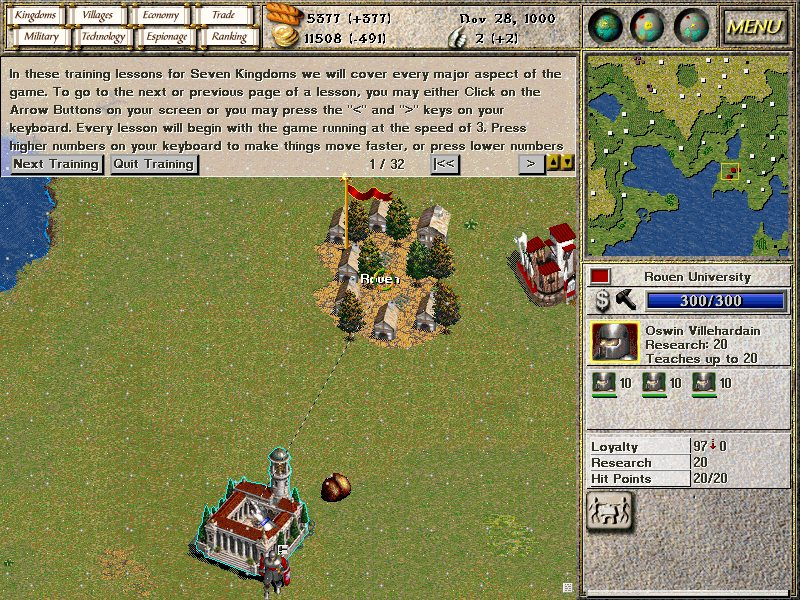

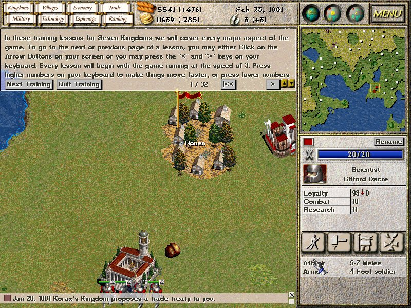

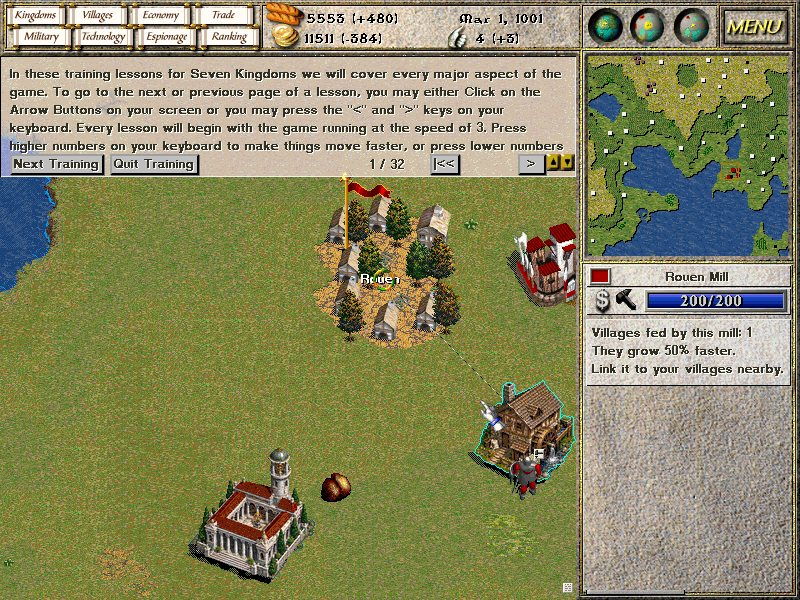
nuovoMenu di costruzione in due pagine
Con più di 11 edifici il menu non entrava più: ora la prima pagina ha 10 edifici, «More» e «Annulla», la seconda il resto e «Back».

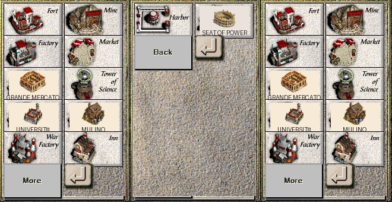
nuovoEconomia: pietra, legno e sale
Sei merci invece di tre, tutte vendibili al mercato e trasportabili con le carovane. Ogni materia ha il suo prodotto: argilla → vasi, rame → armi di bronzo, ferro → armi di ferro, pietra → pietra squadrata, legno → mobili, sale → sale da tavola.
- Pietra: nuovi giacimenti sulla mappa, si estrae con la Miniera normale.
- Falegnameria: si costruisce solo in mezzo agli alberi e taglia legna in proporzione agli alberi intorno. Nelle partite nuove ci sono boschi fitti di alberi grandi.
- Saline: solo vicino al mare; sale senza fine, ma rendono meno di una miniera.
- Fonderia: armi di bronzo dal rame o di ferro dal ferro (il pulsante cambia tra i due). Vasellame: vasi dall'argilla. Entrambe lavorano più in fretta della Fabbrica.
- I pulsanti di carico della carovana mostrano solo le merci presenti alla fermata, affiancati; il carico si legge su due righe da sei.

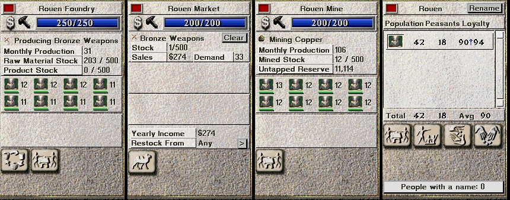

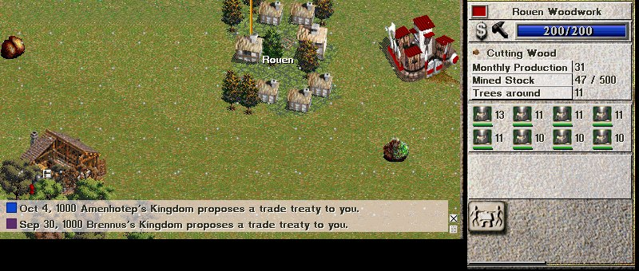

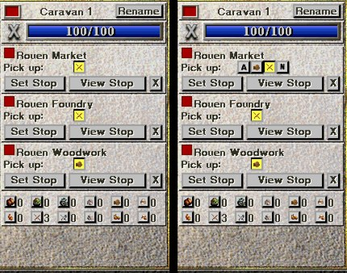

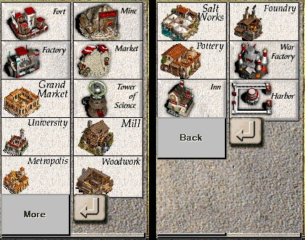

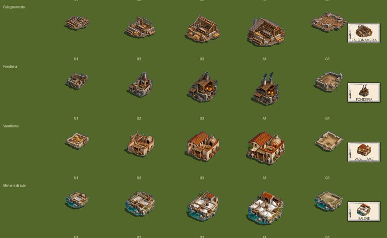
nuovoMetropoli: la città che evolve
Rifatta come ha deciso Simone il 26/10: «il villaggio ha un tasto per evolversi, se ci clicco una delle casine si trasforma in questo palazzo un pò più alto e importante e da quel momento il cap di quel villaggio sale a 100».
- All'Università si ricerca Metropolis, nel menu RESEARCH.
- Dopo la ricerca, nella striscia in fondo al pannello di ogni tuo villaggio compare il pulsante «Metropolis». Costa 1000 monete.
- Cliccandolo, la casa più vicina al centro diventa il palazzo della città, disegnato da Codex per ognuno dei 18 popoli: più alto, con una bandierina del colore del regno.
- Il villaggio può arrivare a 100 abitanti e si chiama «… Metropolis». Non nascono altri quartieri.
Il King's Palace e la Metropoli di prima non si costruiscono più. Restano solo nelle partite salvate prima, dove continuano a funzionare.

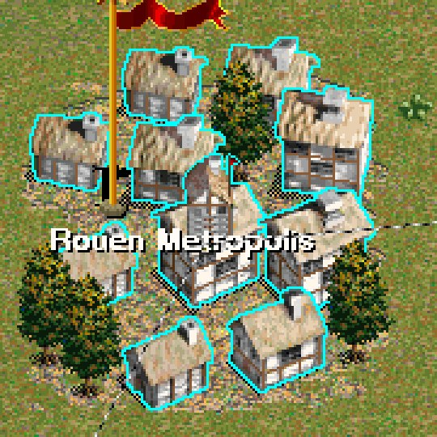

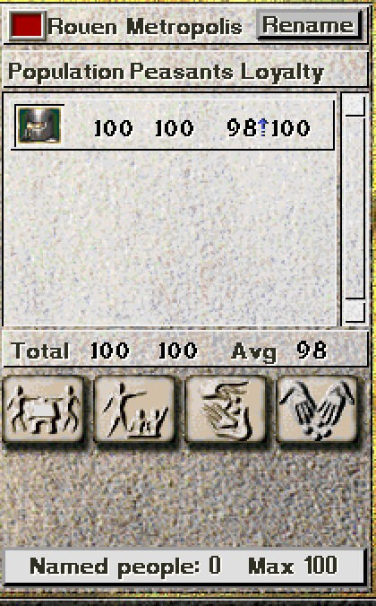

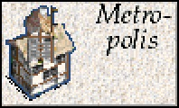

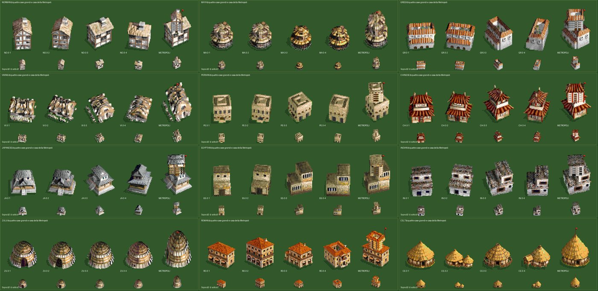
nuovoFarming: il Mulino con i contadini
Abilità nuova «Farming». Il Mulino prende fino a 8 contadini dai villaggi collegati, come una fabbrica; lavorando migliorano. La crescita in più dei villaggi dipende da quanto sono bravi: all'inizio circa +5%, con contadini esperti fino a +50%. Nelle partite salvate prima il Mulino resta com'era (senza lavoratori, +50%).

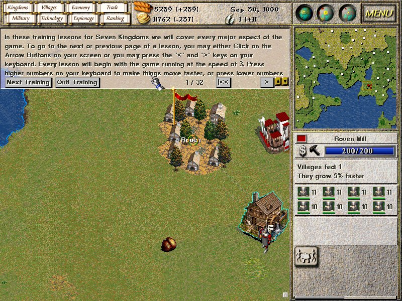
nuovoRicerca all'Università
Rifatta come la Tower of Science, come chiesto da Simone: nel pannello dell'Università c'è il pulsante RESEARCH accanto a RECRUIT. Apre il menu «Research a building» con un pulsante per ogni edificio nuovo non ancora ricercato (Grand Market, Mill, Woodwork, Salt Works, Foundry, Pottery e la Metropolis), con la percentuale; il bordo giallo indica quello in corso. In fondo al pannello c'è la barra di avanzamento, come nella Tower. Lavorano tutte le Università del regno che hanno un professore. Per ora gli edifici restano costruibili anche prima della ricerca.

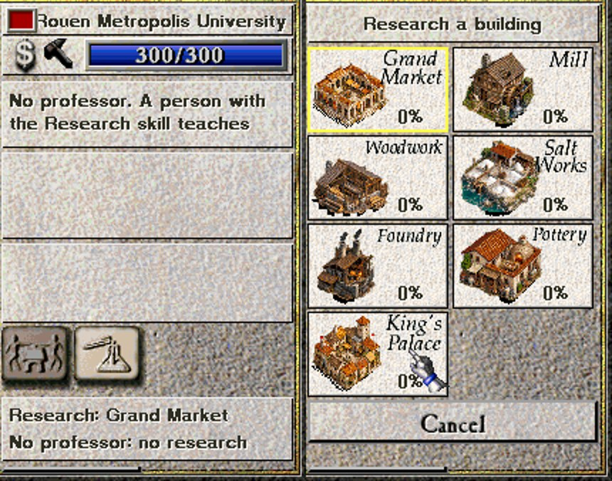

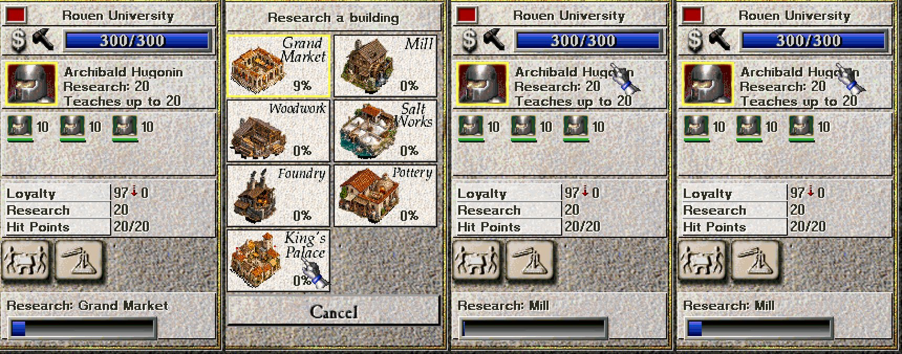
correttoPulsanti dei nuovi edifici
Rifatti come quelli originali: sfondo di pietra, l'edificio vero del gioco e il nome in corsivo (Grand Market, University, Mill, Seat of Power).

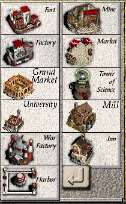
correttoCamminate di Romani e Celti
Tre difetti sistemati.
- Lo scambio di gamba (segnalato da Simone): prima la stessa gamba restava sempre avanti. Codex ha rifatto le pose partendo da quelle approvate; ora il passo è sinistra avanti, gambe al centro, destra avanti, gambe al centro. Verso nord e nelle diagonali (NE, SE e quindi anche SW, NW), dove le gambe si vedono di tre quarti o da dietro, la posa con l'altra gamba avanti è quella approvata con la sola colonna delle gambe specchiata (corretto il 25/10 dopo la segnalazione di Simone).
- La direzione: camminando verso sinistra la figura guardava a destra. Ora, come per i popoli originali, le direzioni verso ovest sono lo specchio di quelle verso est.
- I sei popoli nuovi (26/10): Codex ha rifatto le loro camminate con lo stesso metodo dello scambio di gamba; verso nord la gamba si scambia specchiando la sola colonna delle gambe, come per Romani e Celti.
- Da fermi (segnalato da Simone il 26/10): stavano a gambe larghe, perché il gioco usa come posa da fermo il primo passo della camminata. Ora usano il passo a gambe unite; Codex sta disegnando una vera posa da fermo per tutti i popoli nuovi.
- Altezza e piedi: da un passo all'altro la figura cambiava altezza; ora resta uguale e i piedi stanno sulla stessa linea.

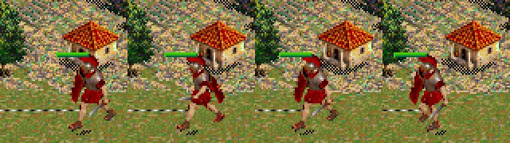

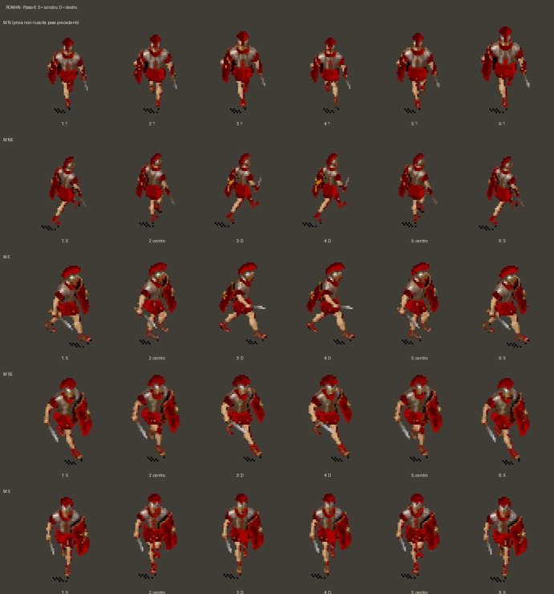
nuovoSalvataggi
I salvataggi delle versioni precedenti si caricano ancora tutti, compresi quelli con il Grande Mercato e l'Università. Corretta anche l'animazione di crollo del Grande Mercato.
La grafica di Codex dei sei popoli nuovi
Ora sono nel gioco (vedi sopra). Grafica provvisoria finché Simone non la approva.
Sanniti · dio Mamerte · Santuario di Pietrabbondante

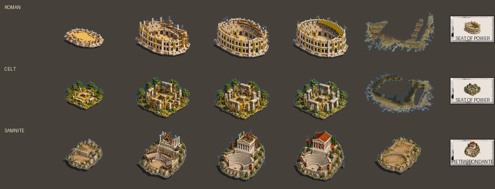

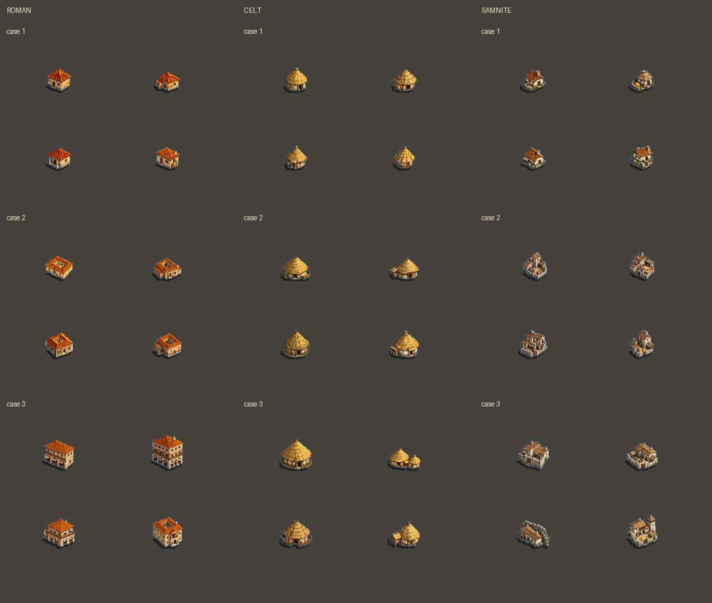

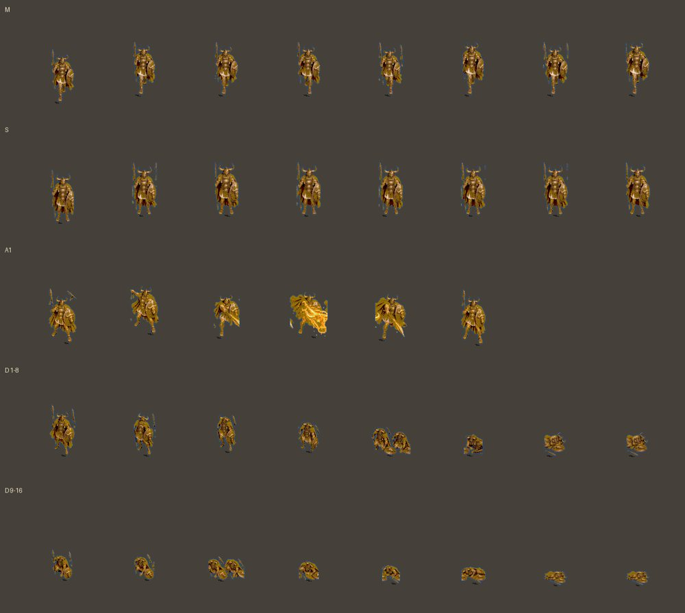